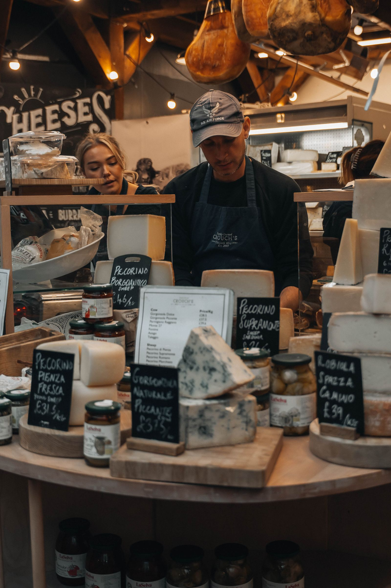
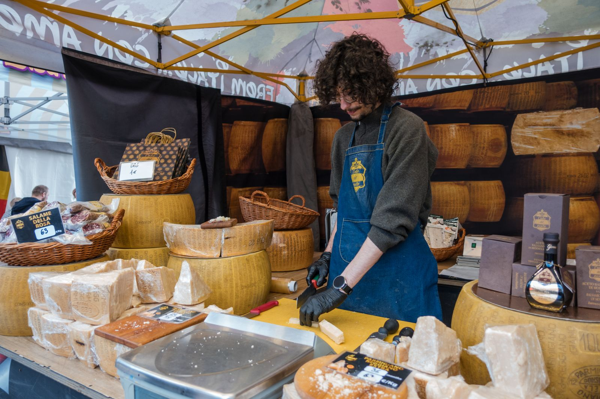
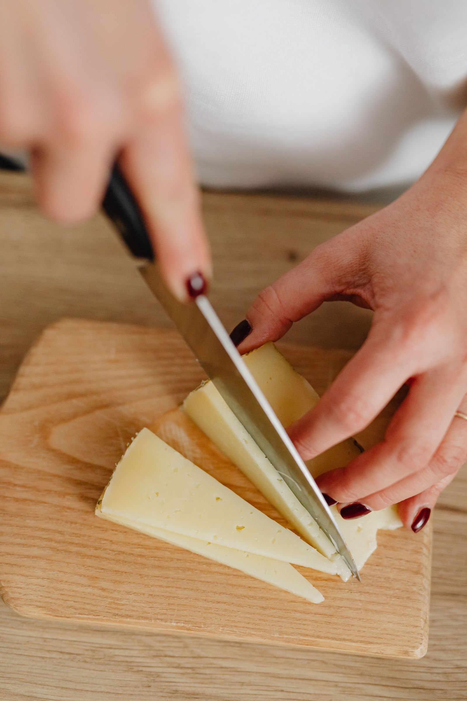

Noord-HollandDe Noord-Hollandse Kaaskoerier
Matteo Franssen · persoonlijk advies en streekeigen Noord-Hollandse kaas.
Heiloo (wo) · Wormer (vr) · Alkmaar (za)
Bekijk profiel
De Kaaskoerier is geen winkelketen maar een familie van zelfstandige ondernemers. Acht koeriers, elk met hun eigen regio en vaste markten, herkenbaar aan dezelfde kraam en hetzelfde vakmanschap.

Noord-HollandMatteo Franssen · persoonlijk advies en streekeigen Noord-Hollandse kaas.
Heiloo (wo) · Wormer (vr) · Alkmaar (za)
Bekijk profielVan Baarn tot Spakenburg, met de zaterdagmarkt op het Vredenburg in Utrecht.
Baarn · Hillegom · Hoorn · Utrecht · Malden · Leusden · Nijkerk · Spakenburg
Bekijk markten West-Friesland & Friesland
West-Friesland & FrieslandVan Texel tot Wommels, met twee vaste dagen op de markt in Den Helder.
Wommels · Witmarsum · Den Helder · Texel-Den Burg · Julianadorp
Bekijk markten
Nijmegen e.o.Elke week op vier wijkmarkten in Nijmegen, plus Doesburg en Zandvoort.
Nijmegen (Hatert · Heseveld · Meijhorst · Kelfkensbos) · Doesburg · Zandvoort
Bekijk markten Zuid-Limburg
Zuid-LimburgBijna dagelijks op de markt in het centrum van Maastricht, en op zaterdag ook in Sittard.
Maastricht (di t/m zo) · Sittard (za)
Bekijk markten West-Brabant
West-BrabantOp de markt in de dorpen rond de Biesbosch en het rivierenland.
Sliedrecht · Dussen · Hank · Beneden-Leeuwen · 's Gravendeel
Bekijk markten Zuid-Holland & omgeving
Zuid-Holland & omgevingVan Vlaardingen tot Gorinchem, met vroege zaterdagmarkten in de dorpen.
Dongen · Vlaardingen · Gorinchem · Ypenburg · St. Willebrord · Groot-Ammers
Bekijk markten Groene Hart
Groene HartOp de markt in Diemen en de dorpen van het Groene Hart.
Diemen · Goudswaard · Oude Wetering/Roelofarendsveen · Gouderak
Bekijk marktenBen je een ondernemende marktverkoper met passie voor kaas? De Kaaskoerier biedt een herkenbaar merk, scherpe inkoop en ondersteuning. Jij brengt het vakmanschap.
Neem contact op